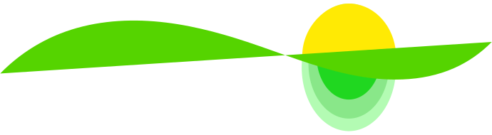
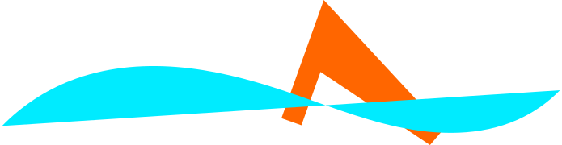
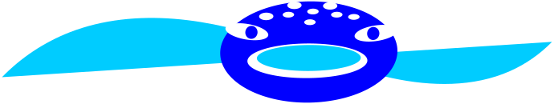

Das Angebot
ist vielfältig und individuell gestaltbar.
Wir lernen uns kennen und erkunden deine Wünsche und Vorstellungen. Auf der Basis deiner Schwimmkenntnisse entwickeln wir ein gemeinsames Ziel.
Die Bezeichnungen Grüne Welle, Haiflosse und Walhai helfen dir bei der Orientierung und Zielsetzung. Meine Empfehlung ist, eine geführte Einheit ergänzt mit einer selbständigen Einheit pro Woche zu planen.
DEINE MISSION
Wasser als Element genießen, einfach schwimmen und Spaß dabei haben!
Vielleicht findest du dich hier wieder !?!
- Ich habe eine ganz klare Vorstellung, was ich will!
- Ich will etwas für mich tun!
- Kraulen wollte ich schon immer lernen!
- Ich brauche Struktur und ein Trainings-Plan!
. . . sonst schreibe mir, was dich zum Schwimmen bringt!
Viel Spaß bei der Wahl!
Kennenlernen

Was kann ich? Was möchte ich können? Geht das?
Das "Kennenlernen" gibt uns die Gelegenheit, deine Erwartungen, Wünsche und Möglichkeiten zu besprechen. Deine Schwimmfähigkeiten genau zu untersuchen und deine Vorstellungen zu erkunden.
mehr/weniger
Solltest du dich für einen Lernblock mit mir entscheiden, kann das "Kennenlernen" die Einstiegsmöglichkeiten klären.
Du gewinnst Einblick in Schwerpunkte, auf die du besonderes Gewicht legen kannst, und Ideen für deinen möglichen Entwicklungsweg.
Grüne Welle - Anfänger
Ich kann baden !
Am Anfang ist jeder Anfänger.
Das Wasser kennen lernen, den eigenen Körper im Wasser wahrnehmen, schweben, gleiten, sinken, aktiv atmen, Körperspannung halten - das sind die Fähigkeiten, die zuerst spielerisch geübt werden.
Wechselbeinschlag und Teile der Armzug-Bewegungen werden langsam integriert.
Nach Absprache wird die Kraul-, Rücken- oder Brust-Lage als Einstiegslage angestrebt.
mehr/weniger
Die Brustlage ist anders, für sie sind der Aufbau und das Ziel anders definiert.
Gleiten und Ausatmung, richtige Armbewegung, richtige Beinbewegung werden als Teilbewegungen eingeübt.
Das Ziel ist alle Teilbewegungen grob miteinander zu verbinden.
Du hast die Grundlage deiner Lieblings-Schwimmlage erworben und kannst die weiterentwickeln.
Haiflosse – Leicht fortgeschritten
Ich möchte mich im Brust-/Rücken-/Kraulschwimmen weiterentwickeln
Zuerst werden Grundfähigkeiten wiederholt: Atmung, Gleiten, Wechselbeinschlag, Armbewegungen und/oder Teilbewegungen des Brustschwimmens.
Danach werden je nach Schwimmlage einzelne Elemente des Armzugs geübt, bei gleichzeitiger Aufmerksamkeit auf Wasserlage, Atmung und Beinschlag.
mehr/weniger
Die Übungen und deren Aufbau werden individuell gestaltet und an dein Können und deinen persönlichen Korrekturbedarf angepasst. Es ist ganz wichtig, dass du dir Zeit nimmst und zwischen den begleiteten Einheiten selbständig übst. Das Ziel ist, eine bessere Vorstellung für richtige Bewegungsabläufe zu gewinnen, ein besseres Körpergefühl für die Wasserlage sowie Freude am Üben zu entwickeln.
Du kannst selbständig einige technische Übungen ausführen und einfache Trainingspläne selbständig trainieren.
Um deine Trainingsfortschritte zu überprüfen, können wir uns zu einer "Wiedersehensstunde" treffen.
Walhai – Dauerschwimmer
Ich möchte einfach schwimmen!
Dein Ziel ist einfach zu schwimmen. Um dabei zu bleiben hilft es dir, Unterstützung zu haben.
Ein Trainingsplan und immer wieder eine kleine Aufgabe halten deine Aufmerksamkeit und Motivation lebendig. Rückmeldungen und Tipps helfen dir deine Selbstwahrnehmung zu schulen.
mehr/weniger
Im Modul Walhai richtet sich die Häufigkeit nach dem Bedarf. Die Idee ist eine langfristige trainerische Begleitung in Anspruch zu nehmen – am besten nach einer intensiven Lernphase.
Wiedersehen
Mache ich noch immer alles richtig? Ich hätte noch eine Frage?
Wir schauen uns gemeinsam an, ob alles Gelernte richtig geübt wird. Wir stellen fest, wo noch eine Verbesserung möglich ist, und vielleicht setzen wir uns neue Ziele.